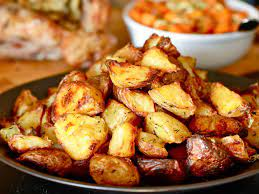

Easy Roast Potatoes

These roast potatoes are delicious, easy, and customizable! You can use whatever seasonings or flavors you like in them!.
- Get as many potatoes as you feel like you need. My rule tends to be one potatoe per person but if they're small potatoes then I'll throw a couple more in just to be safe.
- This step is optional but if you don't like the skins then now would be the time to peel the potatoes.
- For unpeeled potatoes you can poke them with a fork in a few spots and stick them in your microwave and use the potatoe button or put them in for 10-15 minutes on high. For unpeeled you can fully submerge them in a pot of cold water and bring it up to a boil on the stove and let them cook until fork tender. Try not to let the potatoes get too soft and mushy in this step because it can make it difficult to get the right size when cutting them later.
- Remove the potatoes from the microwave or water bath, wait for them to cool until you can safely handle them and begin cutting them into large chunks. I like to chop them in half on the short length and then stand them up on the cut edge and quarter them. You want pieces big enough that they are eaten one at a time and have a lot of surface area to brown and get crispy.
- Preheat your oven on broil, if you don't have a broil setting then you can turn the oven up all the way or do this in a large pan on the stovetop. Line a baking sheet with foil and then spray with nonstick spray or oil it down and dump the potatoes out on the tray. Drizzle them with oil of your choice and hit them with the seasoning blend of your choice. For the pan, preheat your pan to a medium-high with enough oil to fully coat the bottom of the pan. Put your chopped potatoes into a bowl and toss them with a little oil and the seasonings of your choice.
- Arrange the potatoes in the sheet tray in a single layer and stick them under the broiler. Let them go for about 10 or 15 minutes and then check them, you may want to turn or flip some of them to get even browning on all sides. For the pan just cook the potatoes in batches small enough to fit them all in a single layer and turn them to brown each side.
- Remove your potatoes and enjoy!